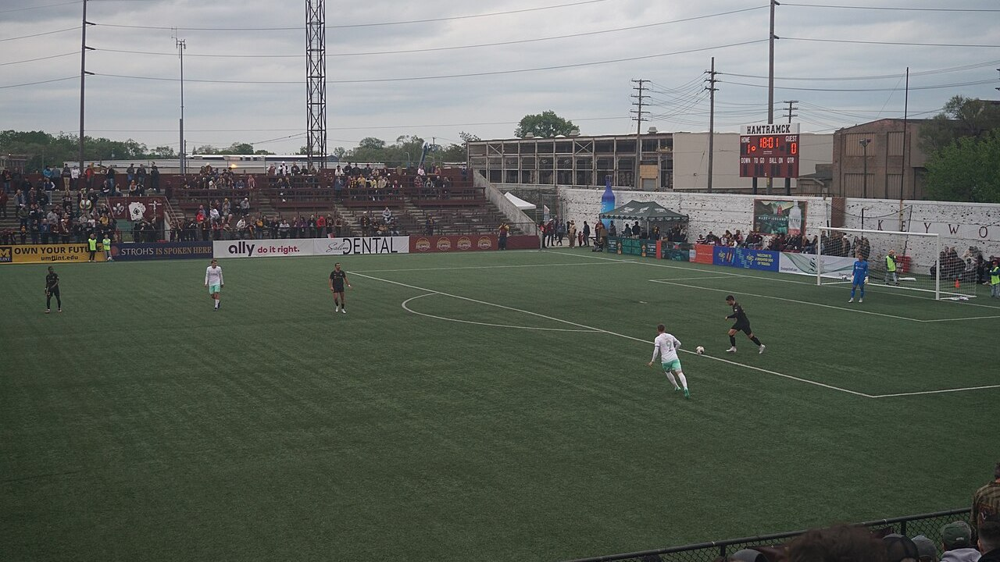
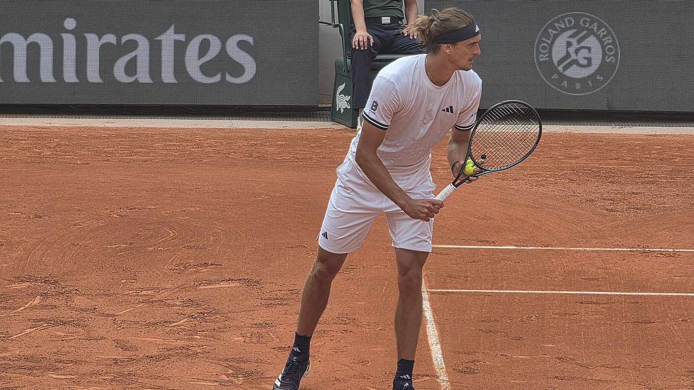

Sports News
Latest sports news from WireMinute: football, cricket, tennis and more from around the world, updated every minute.

Will 2024 version of Palmer ever re-emerge for Chelsea?
28 November 2026 · 4:53 PM PKT
Man Utd trigger Fernandes' one-year contract extension
28 November 2026 · 3:28 PM PKT
Does another derby moment beckon for Swansea stand-in Williams?
28 November 2026 · 3:07 PM PKT
'I was trying to be someone I wasn't' – Steward on All Blacks shot
28 November 2026 · 2:11 PM PKT
Ranking the Premier League's ultimate free-kick specialists
28 November 2026 · 1:14 PM PKT
I watched every Brighton game at Dortmund
28 November 2026 · 12:29 PM PKT
How dad's embarrassment was making of Gross at Brighton
28 November 2026 · 12:25 PM PKT
Who am I? Plus today's other quizzes
28 November 2026 · 12:04 PM PKT
'It doesn't come from me' - Eckert irked by Southampton jibes at Boro
28 November 2026 · 11:54 AM PKT
How a football team rebuilt after 19 players died in plane crash
28 November 2026 · 11:30 AM PKT
WWE Star Bronson Reed Dies at 38
28 November 2026 · 9:33 AM PKT
Wilshere v Ramsey - Arsenal legends treading similar managerial paths
28 November 2026 · 3:58 AM PKT
Five-try Ireland beat Australia in autumn finale
28 November 2026 · 3:17 AM PKT
Gibbs-White stars, Fofana struggles - player ratings for Forest v Chelsea
28 November 2026 · 2:59 AM PKT
Mercedes set pace in eventful Qatar second practice
28 November 2026 · 12:50 AM PKT
Wales aim to finish historic campaign with Japan win
28 November 2026 · 12:35 AM PKT
Decline of deities - the long game the All Blacks cannot afford to lose
27 November 2026 · 11:42 PM PKT
Emery praises Garnacho attitude after Villa selection snub
27 November 2026 · 10:42 PM PKT
Fury Cleared to Fight Joshua on December 11 After Wife Withdraws Schizophrenia Claim
27 November 2026 · 8:44 PM PKT
Arsenal head coach Slegers leaves by mutual consent
27 November 2026 · 8:43 PM PKT
Marquez Bows Out at the Top With Shock MotoGP Retirement After Eighth Title
27 November 2026 · 6:07 PM PKT
England outclass Aussies again to take series lead
27 November 2026 · 4:45 PM PKT
Eight-time champion Marquez to retire from MotoGP
27 November 2026 · 4:14 PM PKT
Australia's sandpapergate probe to also include 2017-18 Ashes
27 November 2026 · 12:47 PM PKT
Great Britain Beat Germany to Reach Davis Cup Semi-Finals for First Time Since 2019
26 November 2026 · 9:07 PM PKT
Zverev too good for Fery in Davis Cup quarter-final
26 November 2026 · 6:28 PM PKT
Hackers Stole FIFA Data in Cyber Attack, Governing Body Confirms
26 November 2026 · 4:52 PM PKT
Sinner Ruled Out of Australian Open After Knee Surgery
26 November 2026 · 12:59 PM PKT
Bellingham Plays Down Zidane Comparisons After Wondergoal Sparks Real Madrid Comeback
26 November 2026 · 1:22 AM PKT
Senegal Reinstated as Africa Cup of Nations Champions After Winning Court Appeal
24 November 2026 · 8:44 PM PKT
Tyson Fury Reveals Schizophrenia Diagnosis in Documentary Ahead of Joshua Fight
24 November 2026 · 9:00 AM PKT
FIFA Confirms US-Led Bid for 2031 Women's World Cup and UK for 2035
23 November 2026 · 8:32 PM PKT
Paredes Collapses During Live TV Interview After Boca's Copa Sudamericana Win
23 November 2026 · 6:13 PM PKT
Alcaraz Beats Zverev to Win First ATP Finals Title in Turin
23 November 2026 · 5:13 AM PKT
Skubal Agrees Record $450 Million Mets Deal, the Richest Ever for a Pitcher
23 November 2026 · 3:54 AM PKT
Marquez Seals Record-Equalling Eighth MotoGP Title With Eighth Place in Portugal
23 November 2026 · 12:37 AM PKT
Messi Escapes Red Card After Throwing Ball at Opponent as Inter Miami Crash 3-0 to Columbus
22 November 2026 · 4:27 PM PKT
Verstappen Takes Wild Las Vegas Win as Late Mercedes Drama Hands McLaren a Double Podium
22 November 2026 · 1:14 PM PKT
Verstappen Inherits Las Vegas Grand Prix Pole as Antonelli's Penalty Drops Him to Sixth
21 November 2026 · 3:15 PM PKT
Nepal's Fans Turn Doha Into a Home Crowd as Their Team's Global Rise Rolls On
21 November 2026 · 1:47 AM PKT
Trump Posthumously Pardons Baseball Hit King Pete Rose
20 November 2026 · 5:28 AM PKT
Under-17 World Cup Kicks Off in Qatar Without the USA
19 November 2026 · 7:41 PM PKT
Infantino to Face First Contested FIFA Election as Diallo and Tashima Enter 2027 Race
19 November 2026 · 4:58 PM PKT
Bancroft Breaks Silence on Sandpapergate, Says Whole Australia Team Knew About Ball Tampering
18 November 2026 · 2:52 PM PKT
Boxing Champion Jorge Linares Detained in Texas as US Immigration Opens Deportation Case
18 November 2026 · 2:36 PM PKT
MS Dhoni Retires From the IPL, Takes Over as Chennai Super Kings Mentor
17 November 2026 · 3:00 PM PKT
UEFA Picks Diallo to Take On Infantino in FIFA Presidential Election
17 November 2026 · 3:01 AM PKT
Klopp Says FIFA Is Worse Under Infantino Than Blatter and Calls for Change
16 November 2026 · 8:45 PM PKT
Australia Beat New Zealand 32-12 to Win Rugby League World Cup for 13th Time
15 November 2026 · 4:15 PM PKT
Spain Coach Insists 'There Is No Racism' in Spain as Yamal and Vinicius Say Otherwise
15 November 2026 · 2:00 PM PKT
Pakistan Reach First-Ever SAFF Championship Final After Late Win Over Bangladesh
15 November 2026 · 7:35 AM PKT
Wales End 73 Years of Hurt With Stunning 35-28 Win Over New Zealand in Cardiff
15 November 2026 · 1:20 AM PKT
Ulva's Last-Ball Four Seals One-Wicket Win as India Beat Pakistan to Ninth U19 Asia Cup Title
14 November 2026 · 8:50 PM PKT
Pochettino in Tears as He Leaves the USA for Manchester United
14 November 2026 · 3:00 PM PKT
Warner Reignites Sandpapergate Row, Accusing Cricket Australia of a Cover-Up
14 November 2026 · 1:40 PM PKT
Andorra Goalkeeper Owono Banned for 12 Matches Over Fatal Collision with De Miguel
14 November 2026 · 12:06 PM PKT
England Retain Wheelchair Rugby League World Cup With 50-38 Win Over France in Wollongong
14 November 2026 · 8:46 AM PKT
WireMinute - News, updated every minute. More headlines